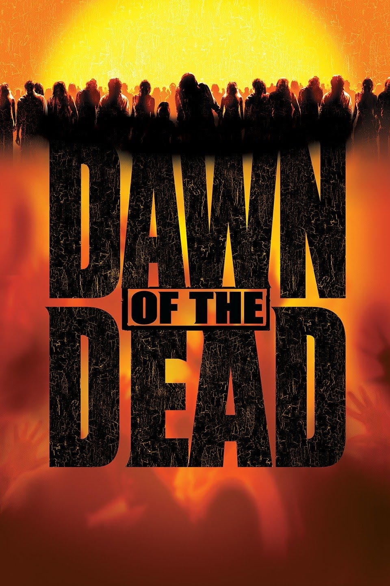
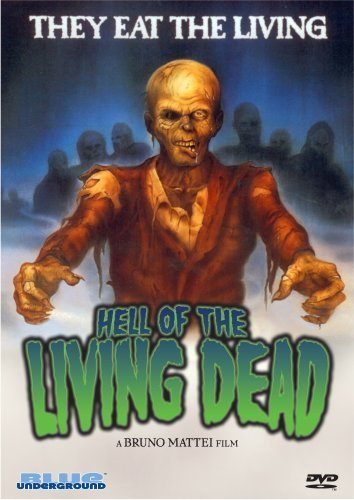
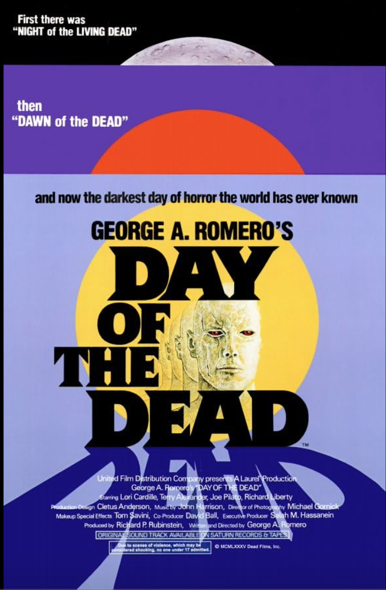
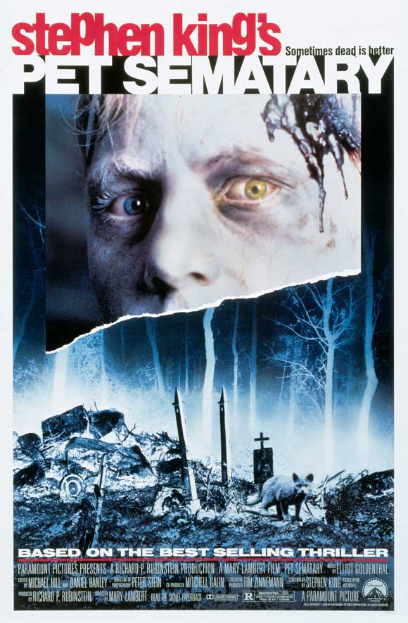
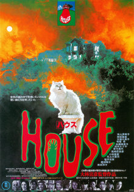

<!DOCTYPE html>
<html lang="en">

<head>


  <link rel="stylesheet" href="https://unpkg.com/leaflet@1.9.4/dist/leaflet.css"
        integrity="sha256-p4NxAoJBhIIN+hmNHrzRCf9tD/miZyoHS5obTRR9BMY=" crossorigin="" />
    <script src="https://unpkg.com/leaflet@1.9.4/dist/leaflet.js"
        integrity="sha256-20nQCchB9co0qIjJZRGuk2/Z9VM+kNiyxNV1lvTlZBo=" crossorigin=""></script>

    <!-- The map dimensions below have been set so that the map fills
the entire screen. -->

    <style>
        #map {
            position: absolute;
            top: 0;
            bottom: 0;
            left: 0;
            right: 0;
        }
    </style>
    <meta charset="UTF-8">
    <meta http-equiv="X-UA-Compatible" content="IE-edge">
    <meta name="viewport" content="width=device-width, initial-scale= 1.0">
    <title>World of Zombies</title>

    <div id="map"></div>

  
      

</head>


<body>


<!-- leaflet js -->  

<script>

  
    //initialize the map with div id
    //the setView method is ([lat, long], zoom level). the coordinates have been
    //changed from Boston [42.35, -71.08] to London, UK. these coordinates are where
    //the map will center when you open it
    
      var map = L.map('map').setView([0, 0], 2);
    
    //Phil chose Raster tiles from maptiler.com, I'm trying one from leaflet
    //There is now 1 default map and 3 additional maps base layers (aubree is trying for a 4th)
    //These can be switched by a button in the upper right corner of the map
    
      var osm = L.tileLayer('https://api.maptiler.com/maps/streets-v2/{z}/{x}/{y}.png?key=EKeqQuSYD2TH9zg9cS8q', {
        maxZoom: 19,
        attribution: '<a href="https://www.maptiler.com/copyright/" target="_blank">&copy; MapTiler</a> <a href="https://www.openstreetmap.org/copyright" target="_blank">&copy; OpenStreetMap contributors</a>'
    }).addTo(map);
    
    var Satellite = L.tileLayer('https://api.maptiler.com/maps/satellite/{z}/{x}/{y}.jpg?key=EKeqQuSYD2TH9zg9cS8q', {
        minZoom: 0,
        maxZoom: 20,
        attribution: '<a href="https://www.maptiler.com/copyright/" target="_blank">&copy; MapTiler</a> <a href="https://www.openstreetmap.org/copyright" target="_blank">&copy; OpenStreetMap contributors</a>',
        ext: 'png'
    });
    
    var twoTone = L.tileLayer('https://api.maptiler.com/maps/toner-v2/{z}/{x}/{y}.png?key=EKeqQuSYD2TH9zg9cS8q', {
        minZoom: 0,
        maxZoom: 18,
        attribution:'<a href="https://www.maptiler.com/copyright/" target="_blank">&copy; MapTiler</a> <a href="https://www.openstreetmap.org/copyright" target="_blank">&copy; OpenStreetMap contributors</a>',
        ext: 'png'
    });
    
    var topographic = L.tileLayer('https://api.maptiler.com/maps/topo-v2/{z}/{x}/{y}.png?key=EKeqQuSYD2TH9zg9cS8q', {
        minZoom: 0,
        maxZoom: 20,
        attribution: '<a href="https://www.maptiler.com/copyright/" target="_blank">&copy; MapTiler</a> <a href="https://www.openstreetmap.org/copyright" target="_blank">&copy; OpenStreetMap contributors</a>',
        ext: 'png'
    });

    var NASAGIBS_ViirsEarthAtNight2012 = L.tileLayer('https://map1.vis.earthdata.nasa.gov/wmts-webmerc/VIIRS_CityLights_2012/default/{time}/{tilematrixset}{maxZoom}/{z}/{y}/{x}.jpg', {
	      attribution: 'Imagery provided by services from the Global Imagery Browse Services (GIBS), operated by the NASA/GSFC/Earth Science Data and Information System (<a href="https://earthdata.nasa.gov">ESDIS</a>) with funding provided by NASA/HQ.',
	      bounds: [[-85.0511287776, -179.999999975], [85.0511287776, 179.999999975]],
	      minZoom: 1,
	      maxZoom: 8,
	      format: 'jpg',
	      time: '',
	      tilematrixset: 'GoogleMapsCompatible_Level'
    });

 //Leaflet Layer Control

var baseMaps = {'Open Street Map': osm,
'Satellite': Satellite,
'Black and white': twoTone,
'Topographic': topographic,
'Earth at night': NASAGIBS_ViirsEarthAtNight2012
}

L.control.layers(baseMaps).addTo(map);

//this bit of code adds a scale in the upper left corner below the zoom

L.control.scale({
    metric: true,
    imperial: true,
    maxWidth: 100,
    position: 'topleft'
}).addTo(map);   

//geoJSON Zombie Valley Marker. This marks a fictional valley
//in Haiti. It's only on the map so that our group can demonstrate 
//how to add one to a map. You build a geoJSON file from 
//geojson.io (https://geojson.io/#map=13.04/18.42491/-72.17085)

var geojson = {
  "type": "FeatureCollection",
  "features": [
    {
      "type": "Feature",
      "properties": {
        "name": "Zombie Valley",
        "stroke": "#c11010",
        "stroke-width": 2,
        "stroke-opacity": 1,
        "fill": "#0e5d13",
        "fill-opacity": 0.5
      },
      "geometry": {
        "coordinates": [
          [
            [
              -72.17085027924324,
              18.448211515171057
            ],
            [
              -72.17325858468932,
              18.44809926752228
            ],
            [
              -72.17564368747398,
              18.447763606019844
            ],
            [
              -72.17798260875044,
              18.44720776456367
            ],
            [
              -72.18025281513196,
              18.446437098315577
            ],
            [
              -72.18243243601975,
              18.445459032045108
            ],
            [
              -72.18450047450855,
              18.44428298851589
            ],
            [
              -72.18643700982766,
              18.442920297606474
            ],
            [
              -72.18822338935897,
              18.441384087045844
            ],
            [
              -72.18984240837648,
              18.43968915582193
            ],
            [
              -72.19127847577194,
              18.437851831488416
            ],
            [
              -72.19251776416972,
              18.43588981275072
            ],
            [
              -72.19354834298616,
              18.43382199885373
            ],
            [
              -72.1943602931565,
              18.431668307420594
            ],
            [
              -72.19494580243075,
              18.42944948250284
            ],
            [
              -72.1952992403301,
              18.427186894695296
            ],
            [
              -72.19541721205223,
              18.424902335245164
            ],
            [
              -72.19529859081918,
              18.422617806141027
            ],
            [
              -72.19494452836925,
              18.42035530820529
            ],
            [
              -72.19435844350585,
              18.418136629231427
            ],
            [
              -72.19354598882741,
              18.41598313420574
            ],
            [
              -72.19251499597182,
              18.41391555963191
            ],
            [
              -72.19127539991518,
              18.41195381393605
            ],
            [
              -72.1898391430643,
              18.4101167858702
            ],
            [
              -72.1882200600755,
              18.408422162754377
            ],
            [
              -72.18643374451536,
              18.406886260301857
            ],
            [
              -72.18449739865156,
              18.405523865660125
            ],
            [
              -72.18242966782154,
              18.404348095172786
            ],
            [
              -72.18025046097286,
              18.403370268225522
            ],
            [
              -72.17798075909948,
              18.402599798384916
            ],
            [
              -72.17564241341222,
              18.402044102872672
            ],
            [
              -72.17325793517827,
              18.40170853124207
            ],
            [
              -72.17085027924324,
              18.401596313939294
            ],
            [
              -72.16844262330821,
              18.40170853124207
            ],
            [
              -72.16605814507426,
              18.402044102872672
            ],
            [
              -72.163719799387,
              18.402599798384916
            ],
            [
              -72.16145009751362,
              18.403370268225522
            ],
            [
              -72.15927089066494,
              18.404348095172786
            ],
            [
              -72.15720315983492,
              18.405523865660125
            ],
            [
              -72.15526681397112,
              18.406886260301857
            ],
            [
              -72.153480498411,
              18.408422162754377
            ],
            [
              -72.15186141542218,
              18.4101167858702
            ],
            [
              -72.1504251585713,
              18.41195381393605
            ],
            [
              -72.14918556251466,
              18.41391555963191
            ],
            [
              -72.14815456965907,
              18.41598313420574
            ],
            [
              -72.14734211498063,
              18.418136629231427
            ],
            [
              -72.14675603011723,
              18.42035530820529
            ],
            [
              -72.14640196766729,
              18.422617806141027
            ],
            [
              -72.14628334643425,
              18.424902335245164
            ],
            [
              -72.14640131815638,
              18.427186894695296
            ],
            [
              -72.14675475605573,
              18.42944948250284
            ],
            [
              -72.14734026532999,
              18.431668307420594
            ],
            [
              -72.1481522155003,
              18.43382199885373
            ],
            [
              -72.14918279431676,
              18.43588981275072
            ],
            [
              -72.15042208271454,
              18.437851831488416
            ],
            [
              -72.15185815011,
              18.43968915582193
            ],
            [
              -72.15347716912751,
              18.441384087045844
            ],
            [
              -72.15526354865882,
              18.442920297606474
            ],
            [
              -72.15720008397793,
              18.44428298851589
            ],
            [
              -72.15926812246673,
              18.445459032045108
            ],
            [
              -72.16144774335453,
              18.446437098315577
            ],
            [
              -72.16371794973604,
              18.44720776456367
            ],
            [
              -72.1660568710125,
              18.447763606019844
            ],
            [
              -72.16844197379716,
              18.44809926752228
            ],
            [
              -72.17085027924324,
              18.448211515171057
            ]
          ]
        ],
        "type": "Polygon"
      },
      "id": 0
    },
    {
      "type": "Feature",
      "properties": {
        "name": "Zombie Valley"
      },
      "geometry": {
        "coordinates": [
          -72.17085027399811,
          18.424903898672497
        ],
        "type": "Point"
      },
      "id": 1
    }
  ]
}

L.geoJSON(geojson).bindPopup(function(layer){
    return layer.feature.properties.name;
}).addTo(map)

//Marker

//For the project, we need a custom marker
//I have chosen a zombie cartoon face. the movie poster and data will pop-up
//when you click on it. Below in myIcon, I have added a cartoon zombie face png. 

var myIcon = L.icon({
    iconUrl: "zombie_icon.png",
    iconSize: [40, 60],
    iconAnchor: [20, 50],
    popupAnchor: [0, -50],
    
    //shadowUrl: 'my-icon-shadow.png',
    //shadowSize: [68, 95],
    //shadowAnchor: [22, 94]
  
    
});

//REMEMBER! If our images end up in a folder of their own. we will
//need to prefix ./Folder/picture.jpg to the image name

//AUBREE - BELOW IS BEGINNING OF YOUR MOVIE LOCATIONS AND INFO

    var Z28dayslater = L.marker([51.494720, -0.135278], {icon: myIcon}).addTo(map)
    var popUp = Z28dayslater.bindPopup("<h1>28 Days Later (2002)</h1><p>The story was based on <i>The Night of the Living Dead</i> and <i>The Day of the Triffids</i>. The story takes place in various cities in Great Britain, including London, Deptford, Manchester, and Cumbria.</p>")

    var Z28dayslater1 = L.marker([53.8260, -2.4220], {icon: myIcon}).addTo(map)
    var popUp = Z28dayslater1.bindPopup("<h1>28 Days Later (2002)</h1><p>Filmed in London, UK. Directed by Danny Boyle, written by Alex Garland</p>")

    var Zdawn = L.marker([43.0389025, -87.9064736], {icon: myIcon}).addTo(map)
    var popUp = Zdawn.bindPopup("<h1>Dawn of the Dead (2004)</h1><p>The story was based on the 1978 film of the same name; the story location is Milwaukee, Wisconson.</p>")

    var Zdawn1 = L.marker([43.651070, -79.347015], {icon: myIcon}).addTo(map)
    var popUp = Zdawn1.bindPopup("<h1>Dawn of the Dead (2004)</h1><p>Filmed in Toronto, ON. Directed by Zack Snyder.</p>")

    var Zshaun = L.marker([51.5820, -0.1221], {icon: myIcon}).addTo(map)
    var popUp = Zshaun.bindPopup("<h1>Shaun of the Dead (2004)</h1><p>The story was inspired by the 1999-2001 sitcom <i>Spaced</i>. The story location is Crouch End, London.</p>")

    var Zshaun1 = L.marker([51.509865, -0.118092], {icon: myIcon}).addTo(map)
    var popUp = Zshaun1.bindPopup("<h1>Shawn of the Dead (2004)</h1><p>Filmed in London, UK. Directed by Edgar Wright.</p>")

    var Zworld = L.marker([39.9524, -75.1463], {icon: myIcon}).addTo(map)
    var popUp = Zworld.bindPopup("<h1>World War Z (2013)</h1><p>The story was based on the 2006 novel of the same name by Max Brooks. The story travels across the world, including Philadelphia, Pennsylvania; Newark, New Jersey; in the middle of the Atlantic Ocean (on a boat); South Korea; Jerusalem, Israel; Cardiff, Wales; and Freeport, Nova Scotia.</p>")

    var Zworld1 = L.marker([47.49835, 19.04045], {icon: myIcon}).addTo(map)
    var popUp = Zworld1.bindPopup("<h1>World War Z (2013)</h1><p>Filmed in several cities, including Malta, Glasgow, and Budapest. Directed by Marc Forster.</p>")

    var Zhell = L.marker([-6.314993, 143.95555], {icon: myIcon}).addTo(map)
    var popUp = Zhell.bindPopup("<h1>Hell of the Living Dead (1980)</h1><p>The story is based out of Papau New Guinea; Papau New Guinea is also where the story originated.</p>")

    var Zhell1 = L.marker([41.38879, 2.15899], {icon: myIcon}).addTo(map)
    var popUp = Zhell1.bindPopup("<h1>Hell of the Living Dead (1980)</h1><p>Filmed in Barcelona, Spain. Directed by Bruno Mattei.</p>")

    var Zreturn = L.marker([38.25424, -85.75941], {icon: myIcon}).addTo(map)
    var popUp = Zreturn.bindPopup("<h1>Return of the Living Dead (1985)</h1><p>The story is based out of Louisville, Kentucky.</p>")

    var Zreturn1 = L.marker([34.05223, -118.24368], {icon: myIcon}).addTo(map)
    var popUp = Zreturn1.bindPopup("<h1>Return of the Living Dead (1985)</h1><p>Filmed in Los Angeles, California. Directed by Dan O'Bannon.</p>")

    var Zreturn2 = L.marker([21.01858, -101.2591], {icon: myIcon}).addTo(map)
    var popUp = Zreturn2.bindPopup("<h1>Return of the Living Dead (1985)</h1><p>The story originates from Guanajuato, Mexico.</p>")

    var Zday = L.marker([26.62168, -81.84059], {icon: myIcon}).addTo(map)
    var popUp = Zday.bindPopup("<h1>Day of the Dead (1985)</h1><p>The story is based in Fort Myers, Florida. This was the third in a trilogy by George A. Romero.</p>")

    var Zday1 = L.marker([40.88812, -80.33812], {icon: myIcon}).addTo(map)
    var popUp = Zday1.bindPopup("<h1>Day of the Dead (1985)</h1><p>Filmed in Wampum, Pennsylvania. Directed by George A. Romero.</p>")

    var Zserpent = L.marker([42.35843, -71.05977], {icon: myIcon}).addTo(map)
    var popUp = Zserpent.bindPopup("<h1>The Serpent and the Rainbow (1988)</h1><p>The story is based in Boston, MA and Port-au-Prince, Haiti. The story originated in Haiti.</p>")

    var Zserpent1 = L.marker([18.54349, -72.33881], {icon: myIcon}).addTo(map)
    var popUp = Zserpent1.bindPopup("<h1>The Serpent and the Rainbow (1988)</h1><p>Filmed in Boston, MA and Haiti. Directed by Wes Craven.</p>")

    var Zserpent2 = L.marker([42.35843, -71.05977], {icon: myIcon}).addTo(map)
    var popUp = Zserpent2.bindPopup("<h1>The Serpent and the Rainbow (1988)</h1><p>The story is based in Boston, MA and Port-au-Prince, Haiti. The story originated in Haiti.</p>")

    var Zwax = L.marker([34.05223, -118.24368], {icon: myIcon}).addTo(map)
    var popUp = Zwax.bindPopup("<h1>Waxwork (1988)</h1><p>Filmed in Los Angeles, California. Directed by Anthony Hickox.</p>")

    var Zwax1 = L.marker([18.971187, -72.285215], {icon: myIcon}).addTo(map)
    var popUp = Zwax1.bindPopup("<h1>Waxwork (1988)</h1><p>The story is based in Los Angeles, California. The story originated in Haiti.</p>")

    var Zpet = L.marker([44.54341, -68.41946], {icon: myIcon}).addTo(map)
    var popUp = Zpet.bindPopup("<h1>Pet Semetary (1989)</h1><p>Filmed in Ellsworth, Maine. Directed by Mary Lambert.</p>")

    var Zpet1 = L.marker([43.65737, -70.2589], {icon: myIcon}).addTo(map)
    var popUp = Zpet1.bindPopup("<h1>Pet Semetary (1989)</h1><p>The story is based in Ludlow, Maine. The story originated in Haiti.</p>")

    var Zpet2 = L.marker([46.81228, -71.21454], {icon: myIcon}).addTo(map)
    var popUp = Zpet2.bindPopup("<h1>Pet Semetary (1989)</h1><p>The story originates from the Mi'kmaq Traditional/Contemporary Lands in the Northeastern Woodlands.</p>")

    var Zbrain = L.marker([-40.900557, 174.885971], {icon: myIcon}).addTo(map)
    var popUp = Zbrain.bindPopup("<h1>Braindead (1992)</h1><p>Filmed in Wellington, New Zealand. Directed by Peter Jackson.</p>")

    var Zbrain1 = L.marker([-40.900557, 174.885971], {icon: myIcon}).addTo(map)
    var popUp = Zbrain1.bindPopup("<h1>Braindead (1992)</h1><p>The story is based in Wellington, New Zealand. The story originated in Haiti.</p>")

    var Zbrain2 = L.marker([-6.9229, 112.0522], {icon: myIcon}).addTo(map)
    var popUp = Zbrain2.bindPopup("<h1>Braindead (1992)</h1><p>The story originates from Periuk, Indonesia.</p>")

    var Zhouse = L.marker([35.73355, 139.54761], {icon: myIcon}).addTo(map)
    var popUp = Zhouse.bindPopup("<h1>House (1977)</h1><p>Filmed in Ciyoda, Tokyo, Japan. Directed by Nobuhiko Obayashi.</p>")

    var Zhouse1 = L.marker([35.6895, 139.69171], {icon: myIcon}).addTo(map)
    var popUp = Zhouse1.bindPopup("<h1>House (1977)</h1><p>The story is based in Tokyo, Japan.</p>")

    //the code below provides a red line that connects these two coordinates. 
//it is not very nice looking but its a start. In reality it is a polygon
//that is missing a point (and subsequently, a side. That means that potentially, 
//we could add a third coordinate and this will become a triangle. 

    var latlngs = [[51.494720, -0.135278], [53.8260, -2.4220]];
    var polyline = L.polyline(latlngs, {color: 'red'}).addTo(map);

    var latlngs = [[43.0389025, -87.9064736], [43.651070, -79.347015]];
    var polyline = L.polyline(latlngs, {color: 'red'}).addTo(map);

    var latlngs = [[51.5820, -0.1221], [51.509865, -0.118092]];
    var polyline = L.polyline(latlngs, {color: 'red'}).addTo(map);

    var latlngs = [[39.9524, -75.1463], [47.49835, 19.04045]];
    var polyline = L.polyline(latlngs, {color: 'red'}).addTo(map);

    var latlngs = [[-6.314993, 143.95555], [41.38879, 2.15899]];
    var polyline = L.polyline(latlngs, {color: 'red'}).addTo(map);

    var latlngs = [[38.25424, -85.75941], [34.05223, -118.24368], [21.01858, -101.2591]];
    var polyline = L.polyline(latlngs, {color: 'red'}).addTo(map);

    var latlngs = [[26.62168, -81.84059], [40.88812, -80.33812]];
    var polyline = L.polyline(latlngs, {color: 'red'}).addTo(map);

    var latlngs = [[42.35843, -71.05977], [18.54349, -72.33881]];
    var polyline = L.polyline(latlngs, {color: 'red'}).addTo(map);

    var latlngs = [[34.05223, -118.24368], [18.971187, -72.285215]];
    var polyline = L.polyline(latlngs, {color: 'red'}).addTo(map);

    var latlngs = [[44.54341, -68.41946], [43.65737, -70.2589], [46.81228, -71.21454]];
    var polyline = L.polyline(latlngs, {color: 'red'}).addTo(map);

    var latlngs = [[-40.900557, 174.885971], [-6.9229, 112.0522]];
    var polyline = L.polyline(latlngs, {color: 'red'}).addTo(map);

    var latlngs = [[35.73355, 139.54761], [35.6895, 139.69171]];
    var polyline = L.polyline(latlngs, {color: 'red'}).addTo(map);

    popUp.addTo(map)
    myIcon.addTo(map)
    map.fitBounds(polyline.getBounds())

  </script>
</body>


</html>